Let  be a field. A map
be a field. A map
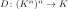
is multilinear if it is linear in each argument with the others fixed, and alternating if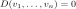
whenever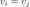
for some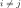
. The determinant of a matrix is applied to its columns.
applied to its columns.
An alternating multilinear changes sign when two arguments are
exchanged, and satisfies
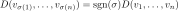
for every permutation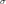
. It is unchanged by adding a multiple of one argument to another.Expanding by multilinearity leaves
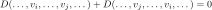
, the two repeated-argument terms vanishing; this is antisymmetry in a transposition, and the general case follows since transpositions generate and is the unique homomorphism sending each to
is the unique homomorphism sending each to 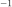
. Adding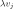
to the -th argument adds
.
-th argument adds
.
There is exactly one alternating multilinear
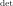
on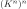
with , namely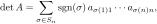
equals
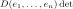
.Uniqueness first. Write the
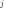
-th argument as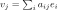
and expand by multilinearity: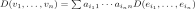
, summed over all functions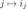
. A term with a repeated index vanishes, so only the bijections survive, and by the previous proposition. This gives the displayed formula times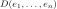
, proving both uniqueness and the last claim.Existence: the displayed formula is multilinear, each term containing exactly one factor from each column. It is alternating: if columns
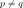
are equal, pair each with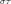
, where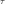
transposes and
and  . The two terms have the same
product of entries – the equal columns make the swap invisible – and
opposite signs, so they cancel; the pairing is a fixed-point-free
involution of
. The two terms have the same
product of entries – the equal columns make the swap invisible – and
opposite signs, so they cancel; the pairing is a fixed-point-free
involution of 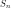
, so the whole sum is . Finally the identity
matrix leaves only
. Finally the identity
matrix leaves only  , giving
, giving  .
.
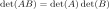
for all ; and
; and
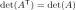
.
Fix  and let
and let
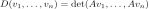
. It is multilinear and alternating, since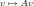
is linear and equal arguments stay equal. By the theorem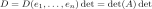
; applied to the columns of , whose images are the columns of
, whose images are the columns of 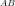
, this is the claim.For the transpose, reindex the defining sum by
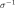
: each term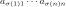
equals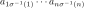
, and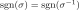
, so the sum for is the sum
for 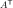
.
A square matrix over a field is invertible if and only if
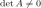
, if and only if its columns are linearly independent.If the columns are dependent, one is a combination of the others; subtracting that combination from it – which does not change the determinant – produces a zero column, so
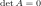
by multilinearity. If the columns are independent they form a basis, so is invertible as a linear map, and
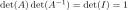
forces .Let
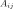
be with row and column deleted, and
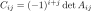
the cofactors. Then for every ,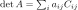
; and, writing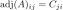
,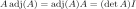
.Write the -th column as
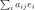
and expand in that argument by linearity: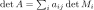
, where is with its -th column replaced by
is with its -th column replaced by
 . Moving that column to position and its -th row to
position by
. Moving that column to position and its -th row to
position by 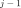
and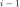
transpositions multiplies the determinant by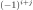
, and the resulting matrix has first column , so its defining sum reduces to that of . Hence
, so its defining sum reduces to that of . Hence
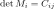
, which is the expansion.For the adjugate, the
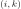
entry of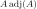
is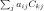
. For this is the expansion along row – the same argument applied to – giving
. For it is the expansion along row  of the
matrix obtained from by replacing row with row , a
matrix with two equal rows, hence of determinant .
of the
matrix obtained from by replacing row with row , a
matrix with two equal rows, hence of determinant .
The adjugate identity is a polynomial identity in the entries, so it
holds over any commutative ring, not only over a field – and that is
exactly what the proof of the Cayley-Hamilton theorem needs, where the
entries live in ![\(K[x]\)](m/af650f35ded7a794d389ff310327aaedc266a5d4.svg) . It also gives Cramer's rule, which is a
formula rather than an algorithm: computing a determinant by the
defining sum costs products, and Gaussian elimination is what one
actually runs.
. It also gives Cramer's rule, which is a
formula rather than an algorithm: computing a determinant by the
defining sum costs products, and Gaussian elimination is what one
actually runs.